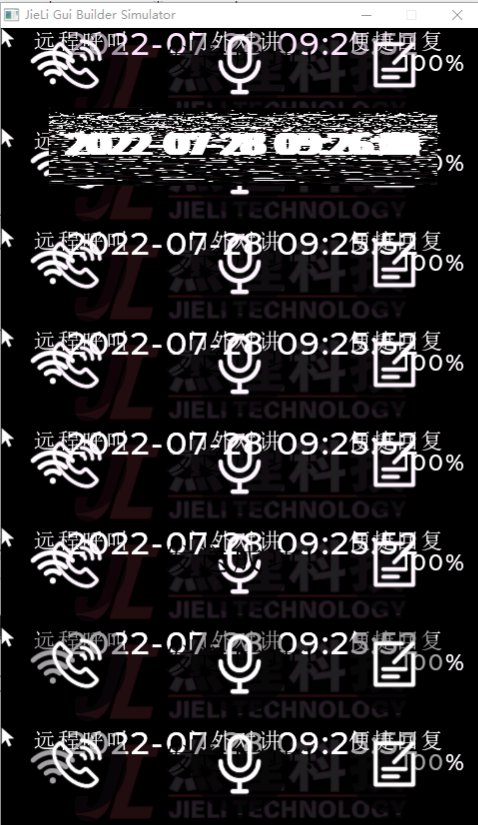
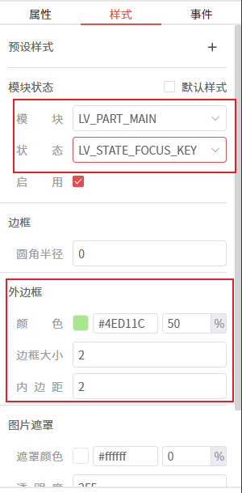
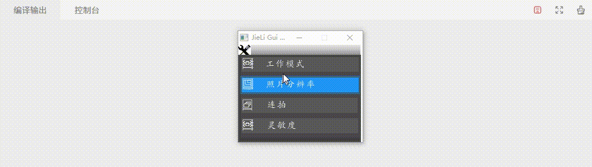
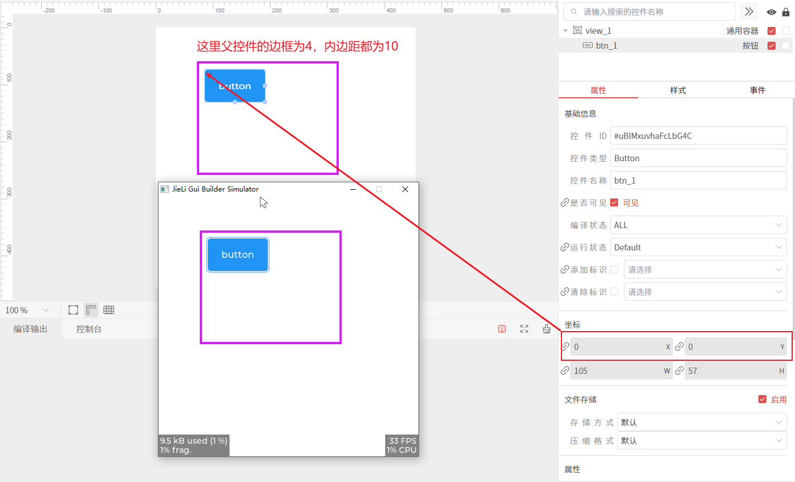
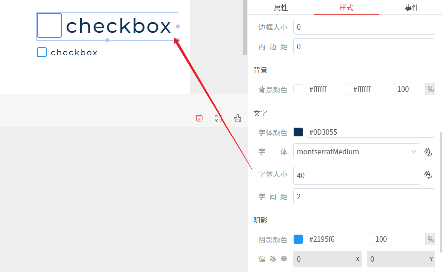
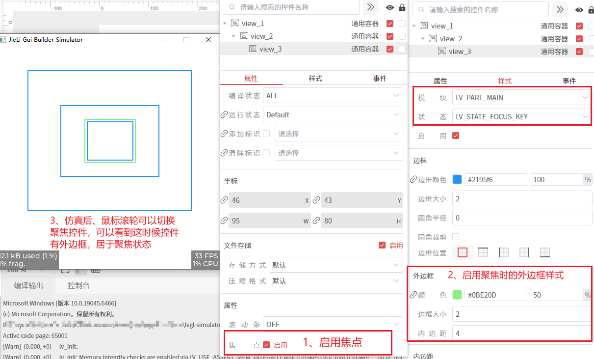

LVGL问题
本章目录
- 1. 页面出现花屏
- 2. 控件设置聚焦后，无法显示聚焦框
- 3. 控件设置了聚集后，仿真端能正常显示，但是在实际设备上无法显示
- 4. 下拉框设置了 Top 方向，但是下拉框的选项显示在了底部
- 5. 普通容器控件不需要能够滚动
- 6. 针对能够垂直滚动的容器控件，需要知道什么时候滚动到底部、顶部
- 7. 控件可以设置文本内容，但在样式里找不到字体设置
- 8. 控件设置 (0, 0) 位置后，但实际位置有偏移
- 9. 需要修改复选框的 □ 的大小
- 10. 加载新页面时，出现白屏
- 11. 为什么不能在 LV_EVENT_GESTURE 事件里 同步 切换页面？
- 12. 给控件增加了Click事件，但是点击控件无法触发Click事件
- 13. 给控件添加了 LV_EVENT_KEY 事件，但按下键盘后没有触发
- 14. 仿真程序预览时，聚焦控件会有外边框
- 15. 矢量字体 freetype 导致卡顿，如何优化？
本章正文
页面出现花屏
- 原因：页面透明度为
0时，页面出现花屏。 - 解决方案：色彩深度LV_COLOR_DEPTH和LV_COLOR_SCREEN_TRANSP设置不一致，在
lv_conf.h中设置一致。
16位色深时，如果需要页面透明度为0，需要将LV_COLOR_SCREEN_TRANSP设置为0，其他情况可以设置为1
#define LV_COLOR_DEPTH 16
#define LV_COLOR_SCREEN_TRANSP 0

控件设置聚焦后，无法显示聚焦框
- 原因：控件的聚焦框样式设置不正确。
- 解决方案：当控件处于聚焦状态时，使用的是模块
LV_PART_MAIN状态LV_STATE_FOCUSED_KEY的样式，所以只需要启用该样式，同时设置外边框的属性即可。

控件设置了聚集后，仿真端能正常显示，但是在实际设备上无法显示
- 原因：在设备初始化lvgl时，没有对
default_group进行初始化，导致控件添加到default_group失败。 - 解决方案：在设备初始化lvgl时，对
default_group进行初始化。
提示
在初始化输入设备驱动，注册到lvgl时，可能需要将其分配到 default_group 中，在仿真端，已经注册了 鼠标 和 键盘 输入设备，同时分配到了 default_group 中，所以在仿真端上，能够通过 鼠标滚轮 和 键盘Tab键 来切换控件的聚焦状态。
//检查默认组是否创建
if (lv_group_get_default() == NULL) {
// 创建并设置默认组
lv_group_t *default_group = lv_group_create();
lv_group_set_default(default_group);
}
下拉框设置了 Top 方向，但是下拉框的选项显示在了底部
- 原因：下拉框的选项高度过高，无法完全显示在顶部，控件内部将其修改显示在了底部。
- 解决方法：调整下拉框的选项高度，使其能够完全显示在顶部。
普通容器控件不需要能够滚动
- 原因：容器控件默认有
ScrollAble(LV_OBJ_FLAG_SCROLLABLE) 标识，当容器控件里面的子控件超出容器控件的大小时，这时候容器控件可以滚动。 - 解决方法：
清除容器控件的ScrollAble标识。
针对能够垂直滚动的容器控件，需要知道什么时候滚动到底部、顶部
- 解决方法：通过设置容器控件的
LV_EVENT_SCROLL_END事件，在事件回调里判断是否滚动到底部、顶部。
lv_obj_t * src = lv_event_get_target(e);
lv_coord_t bottom = lv_obj_get_scroll_bottom(src);
lv_coord_t top = lv_obj_get_scroll_top(src);
//获取子对象中最小的y1坐标
lv_coord_t minChildY1 = LV_COORD_MAX;
int32_t cnt = lv_obj_get_child_cnt(src);
for (int32_t i = 0; i < cnt; i++) {
lv_obj_t * child = lv_obj_get_child(src, i);
if (child && lv_obj_has_flag(child, LV_OBJ_FLAG_HIDDEN) == false) {
lv_coord_t y = lv_obj_get_y(child);
minChildY1 = LV_MIN(minChildY1, y);
}
}
if (bottom == 0) { //因为子控件中最大的y2坐标从滚动视图的底部开始计算，所以当bottom为0时，说明滚动到了底部
LV_LOG_WARN("scroll to bottom");
} else if (top == minChildY1) { //当top等于子控件中最小的y1坐标时，说明滚动到了顶部
LV_LOG_WARN("scroll to top");
}

控件可以设置文本内容，但在样式里找不到字体设置
- 原因：一些简单文本控件，如
标签、按钮、输入框等，字体在LV_PART_MAIN模块下进行设置，但有些控件，并不是在LV_PART_MAIN模块下设置字体，如下拉框的下拉列表部分，是在LV_DROPDOWN_PART_LIST模块下设置字体。 - 解决方法：在控件的样式中，找到对应的模块，进行字体设置。
控件设置 (0, 0) 位置后，但实际位置有偏移
- 原因：当父控件的
border_width、padding_left、padding_top不为0时，控件设置 (0, 0) 位置后，实际位置会向右下角偏移。 - 解决方法：将父控件的
border_width、padding_left、padding_top设置为0。
// 这个函数说明了控件的内容大小是会减去 `border_width` 和 `padding` 的，这也是父控件 `border_width` 和 `padding` 会影响子控件位置的原因。
void lv_obj_get_content_coords(const lv_obj_t * obj, lv_area_t * area)
{
LV_ASSERT_OBJ(obj, MY_CLASS);
lv_coord_t border_width = lv_obj_get_style_border_width(obj, LV_PART_MAIN);
lv_obj_get_coords(obj, area);
lv_area_increase(area, -border_width, -border_width);
area->x1 += lv_obj_get_style_pad_left(obj, LV_PART_MAIN);
area->x2 -= lv_obj_get_style_pad_right(obj, LV_PART_MAIN);
area->y1 += lv_obj_get_style_pad_top(obj, LV_PART_MAIN);
area->y2 -= lv_obj_get_style_pad_bottom(obj, LV_PART_MAIN);
}

需要修改复选框的 □ 的大小
- 解决方法：通过修改复选框的样式，设置字体的大小，来实现修改
□的大小。

加载新页面时，出现白屏
- 原因：在加载页面时，勾选了
加载新屏幕前释放当前屏幕内存，同时动画时长不为0，加载新页面前，当前页面下的控件都已经被释放，同时页面背景颜色为白色，所以在加载新页面完成前，显示的那一刻，会出现白屏。 - 解决方法：将
加载新屏幕前释放当前屏幕内存的选项取消勾选，或者将动画时长设置为0。
提示
勾选了 删除当前页面 ，则会在加载新页面后，删除旧页面（包括旧页面下的控件）
为什么不能在 LV_EVENT_GESTURE 事件里 同步 切换页面？
- 现象：在
LV_EVENT_GESTURE回调里直接调用ui_load_scr_anim()切换页面，并且启用删除旧页面时，程序可能偶发卡死或崩溃。常见复现方式是反复进入某个页面，再通过右滑手势返回上一级页面。 - 原因：
LV_EVENT_GESTURE是输入设备处理流程中的对象事件。此时 LVGL 正在对当前手势目标对象执行lv_obj_send_event(gesture_obj, LV_EVENT_GESTURE, indev)。如果回调里同步切页面并删除当前页面，当前gesture_obj或它的父级页面可能会在事件派发栈还没有退出时被释放，LVGL 后续继续处理该输入事件时，就可能访问已经失效的对象。 - 解决方法：不要同时将切换页面接口的
延迟时间、动画时长同时设置为0，避免同步切换页面，导致后续lv_indev.c-indev_gesture执行出现异常。或者，在LV_EVENT_GESTURE里只记录需要切换的目标页面，然后通过一次性lv_timer或统一的异步切屏队列，在当前输入事件处理结束后再执行ui_load_scr_anim()。
错误示例：
static void page_event_handler(lv_event_t * e)
{
if(lv_event_get_code(e) == LV_EVENT_GESTURE) {
lv_dir_t dir = lv_indev_get_gesture_dir(lv_indev_active());
if(dir & LV_DIR_RIGHT) {
gui_scr_t * screen = ui_get_scr(GUI_SCREEN_PREV);
if(screen) {
ui_load_scr_anim(&guider_ui, screen, LV_SCR_LOAD_ANIM_NONE, 0, 0, false, true, false);
}
}
}
}
给控件增加了Click事件，但是点击控件无法触发Click事件
- 原因：控件的没有
LV_OBJ_FLAG_CLICKABLE标识，导致无法触发Click事件。 - 解决方法：给控件添加
LV_OBJ_FLAG_CLICKABLE标识。
提示
默认没有 LV_OBJ_FLAG_CLICKABLE 标识的控件类型：图片、标签、直线、加载、GIF、视频、Lottie动画、帧动画、画布、进度文本
给控件添加了 LV_EVENT_KEY 事件，但按下键盘后没有触发
- 原因：键盘输入会先检查输入设备是否绑定了
group，再检查该group当前是否有focused对象；任一条件不满足就会直接返回，不会触发LV_EVENT_KEY。 - 解决方法：启用控件的
焦点属性，并在运行时保证控件处于聚焦状态。
提示
在设计、调试界面时，启用控件的 焦点 属性后，可以启用控件的 LV_PART_MAIN 模块 LV_STATE_FOCUS_KEY 状态的样式，然后启用 外边框 等样式属性，这样子在仿真时，就可以通过控件是否有 外边框，来判断当前控件是否处于聚焦状态了。

仿真程序预览时，聚焦控件会有外边框
- 原因：在仿真程序启动时，系统会自动将焦点设置到第一个可以接收焦点的控件上。当控件获得焦点时，为了突出显示，
LVGL默认主题会给一些控件类型的LV_STATE_FOCUSED_KEY状态，添加一个外边框（outline）。其目的是让用户知道哪个控件当前处于活动状态。 - 解决方法：如果不想显示这个外边框，可以修改
lv_theme_default.c文件，找到outline_primary样式的定义，并将其相关设置注释掉，这样就能去除聚焦时的外边框效果。
// 在 lv_theme_default.c 中，找到 outline_primary 样式相关设置，注释掉
style_init_reset(&styles->outline_primary);
// lv_style_set_outline_color(&styles->outline_primary, theme.color_primary);
// lv_style_set_outline_width(&styles->outline_primary, OUTLINE_WIDTH);
// lv_style_set_outline_pad(&styles->outline_primary, OUTLINE_WIDTH);
// lv_style_set_outline_opa(&styles->outline_primary, LV_OPA_50);
矢量字体 freetype 导致卡顿，如何优化？
- 原因：矢量字体首次或缓存失效时需从 TTF 读取并执行
FT_Load/Render_Glyph，闪存/SD I/O 会带来延迟；默认 16 KB (LV_FREETYPE_CACHE_SIZE) 缓存可存字形有限，频繁淘汰导致重复渲染；加粗等效果会绕开缓存进一步耗时。 - 解决方法：
- 优先使用点阵字体：按字号生成bitmap字体文件，运行时直接读取预生成字形，CPU 占用和延迟固定，内存可控。
- 必须用矢量时：调大
LV_FREETYPE_CACHE_SIZE，尽量将 TTF 放入内存，再开启LV_FREETYPE_SBIT_CACHE减少重复渲染。
提示
在仿真程序上，因为PC性能较好，渲染一次字形的开销很小，不会有明显卡顿，但在实际设备上，渲染一次字形的开销较大，会明显卡顿。